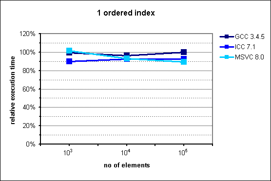
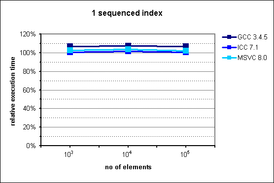
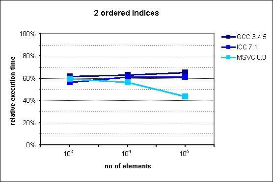
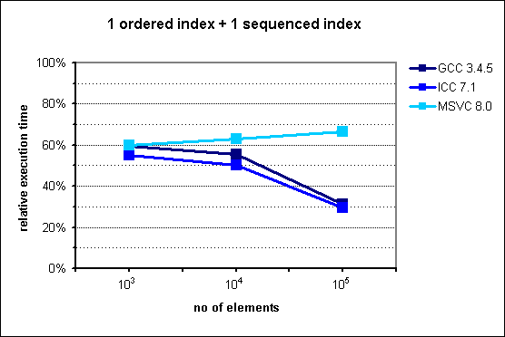
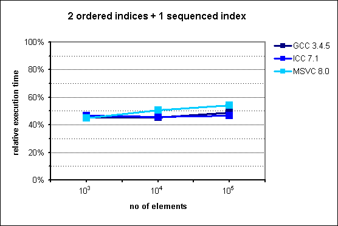

Boost.MultiIndex PerformanceBoost.MultiIndex Performance
Boost.MultiIndex PerformanceBoost.MultiIndex Performancemulti_index_container
Boost.MultiIndex helps the programmer to avoid the manual construction of cumbersome
compositions of containers when multi-indexing capabilities are needed. Furthermore,
it does so in an efficient manner, both in terms of space and time consumption. The
space savings stem from the compact representation of the underlying data structures,
requiring a single node per element. As for time efficiency, Boost.MultiIndex
intensively uses metaprogramming techniques producing very tight implementations
of member functions which take care of the elementary operations for each index:
for multi_index_containers with two or more indices, the running time
can be reduced to half as long as with manual simulations involving several
STL containers.
multi_index_container
The section on emulation
of standard containers with multi_index_container shows the equivalence
between single-index multi_index_containers and some STL containers. Let us now
concentrate on the problem of simulating a multi_index_container with two
or more indices with a suitable combination of standard containers.
Consider the following instantiation of multi_index_container:
typedef multi_index_container< int, indexed_by< ordered_unique<identity<int> >, ordered_non_unique<identity<int>, std::greater >, > > indexed_t;
indexed_t maintains two internal indices on elements of type
int. In order to simulate this data structure resorting only to
standard STL containers, one can use on a first approach the following types:
// dereferencing compare predicate template<typename Iterator,typename Compare> struct it_compare { bool operator()(const Iterator& x,const Iterator& y)const { return comp(*x,*y); } private: Compare comp; }; typedef std::set<int> manual_t1; // equivalent to indexed_t's index #0 typedef std::multiset< const int*, it_compare< const int*, std::greater<int> > > manual_t2; // equivalent to indexed_t's index #1
where manual_t1 is the "base" container that holds
the actual elements, and manual_t2 stores pointers to
elements of manual_t1. This scheme turns out to be quite
inefficient, though: while insertion into the data structure is simple enough:
deletion, on the other hand, necessitates a logarithmic search, whereasmanual_t1 c1; manual_t2 c2; // insert the element 5 manual_t1::iterator it1=c1.insert(5).first; c2.insert(&*it1);
indexed_t deletes in constant time:
// remove the element pointed to by it2 manual_t2::iterator it2=...; c1.erase(**it2); // watch out! performs in logarithmic time c2.erase(it2);
The right approach consists of feeding the second container not with
raw pointers, but with elements of type manual_t1::iterator:
typedef std::set<int> manual_t1; // equivalent to indexed_t's index #0 typedef std::multiset< manual_t1::iterator, it_compare< manual_t1::iterator, std::greater<int> > > manual_t2; // equivalent to indexed_t's index #1
Now, insertion and deletion can be performed with complexity bounds
equivalent to those of indexed_t:
manual_t1 c1; manual_t2 c2; // insert the element 5 manual_t1::iterator it1=c1.insert(5).first; c2.insert(it1); // remove the element pointed to by it2 manual_t2::iterator it2=...; c1.erase(*it2); // OK: constant time c2.erase(it2);
The construction can be extended in a straightworward manner to
handle more than two indices. In what follows, we will compare
instantiations of multi_index_container against this sort of
manual simulations.
The gain in space consumption of multi_index_container with
respect to its manual simulations is amenable to a very simple
theoretical analysis. For simplicity, we will ignore alignment
issues (which in general play in favor of multi_index_container.)
Nodes of a multi_index_container with N indices hold the value
of the element plus N headers containing linking information for
each index. Thus the node size is
SI = e + h0 + иии + hN-1, where
e = size of the element,
hi = size of the i-th header.
On the other hand, the manual simulation allocates N nodes per element, the first holding the elements themselves and the rest storing iterators to the "base" container. In practice, an iterator merely holds a raw pointer to the node it is associated to, so its size is independent of the type of the elements. Summing all contributions, the space allocated per element in a manual simulation is
SM = (e + h0) + (p + h1) + иии + (p + hN-1) = SI + (N-1)p, where
p = size of a pointer.
The relative amount of memory taken up by multi_index_container
with respect to its manual simulation is just
SI / SM, which can be expressed
then as:
SI / SM = SI / (SI + (N-1)p).
The formula shows that multi_index_container is more efficient
with regard to memory consumption as the number of indices grow. An implicit
assumption has been made that headers of multi_index_container
index nodes are the same size that their analogues in STL containers; but there
is a particular case in which this is often not the case: ordered indices use a
spatial optimization
technique which is not present in many implementations of
std::set, giving an additional advantage to
multi_index_containers of one system word per ordered index.
Taking this fact into account, the former formula can be adjusted to:
SI / SM = SI / (SI + (N-1)p + Ow),
where O is the number of ordered indices of the container, and w is the system word size (typically 4 bytes on 32-bit architectures.)
These considerations have overlooked an aspect of the greatest practical
importance: the fact that multi_index_container allocates a single
node per element, compared to the many nodes of different sizes
built by manual simulations, diminishes memory fragmentation, which
can show up in more usable memory available and better performance.
From the point of view of computational complexity (i.e. big-O
characterization), multi_index_container and its corresponding manual
simulations are equivalent: inserting an element into
a multi_index_container reduces to a simple combination of
elementary insertion operations on each of the indices, and
similarly for deletion. Hence, the most we can expect is a reduction
(or increase) of execution time by a roughly constant factor. As we
will see later, the reduction can be very significative for
multi_index_containers with two or more indices.
In the special case of multi_index_containers with only one index,
resulting performance will roughly match that of the STL equivalent containers:
tests show that there is at most a negligible degradation with respect to STL,
and even in some cases a small improvement.
See source code used for measurements.
In order to assess the efficiency of multi_index_container, the following
basic algorithm
multi_index_container<...> c; for(int i=0;i<n;++i)c.insert(i); for(iterator it=c.begin();it!=c.end();)c.erase(it++);
has been measured for different instantiations of multi_index_container
at values of n 1,000, 10,000 and 100,000,
and its execution time compared with that of the equivalent algorithm
for the corresponding manual simulation of the data structure based on
STL containers. The table below describes the test environments used.
| Compiler | Settings | OS and CPU |
|---|---|---|
| GCC 3.4.5 (mingw special) | -O3 |
Windows 2000 Pro on P4 1.5 GHz, 256 MB RAM |
| Intel C++ 7.1 | default release settings | Windows 2000 Pro on P4 1.5 GHz, 256 MB RAM |
| Microsoft Visual C++ 8.0 | default release settings, _SECURE_SCL=0 |
Windows XP on P4 Xeon 3.2 GHz, 1 GB RAM |
The relative memory consumption (i.e. the amount of memory allocated
by a multi_index_container with respect to its manual simulation)
is determined by dividing the size of a multi_index_container node
by the sum of node sizes of all the containers integrating the
simulating data structure.
The following instantiation of multi_index_container was tested:
multi_index_container< int, indexed_by< ordered_unique<identity<int> > > >
which is functionally equivalent to std::set<int>.
| GCC 3.4.5 | ICC 7.1 | MSVC 8.0 |
|---|---|---|
| 80% | 80% | 80% |
multi_index_container with 1
ordered index.
The reduction in memory usage is accounted for by the optimization technique implemented in Boost.MultiIndex ordered indices, as explained above.

Fig. 1: Performance of multi_index_container with 1 ordered index.
Somewhat surprisingly, multi_index_container performs slightly
better than std::set. A very likely explanation for this behavior
is that the lower memory consumption of multi_index_container
results in a higher processor cache hit rate.
The improvement is smallest for GCC, presumably because the worse quality of
this compiler's optimizer masks the cache-related benefits.
The following instantiation of multi_index_container was tested:
multi_index_container< int, indexed_by< sequenced<> > >
which is functionally equivalent to std::list<int>.
| GCC 3.4.5 | ICC 7.1 | MSVC 8.0 |
|---|---|---|
| 100% | 100% | 100% |
multi_index_container with 1
sequenced index.
The figures confirm that in this case multi_index_container nodes are the
same size than those of its std::list counterpart.

Fig. 2: Performance of multi_index_container with 1 sequenced index.
multi_index_container does not attain the performance
of its STL counterpart, although the figures are close. Again, the worst results
are those of GCC, with a degradation of up to 7%, while ICC and MSVC do not
exceed a mere 5%.
The following instantiation of multi_index_container was tested:
multi_index_container< int, indexed_by< ordered_unique<identity<int> >, ordered_non_unique<identity<int> > > >
| GCC 3.4.5 | ICC 7.1 | MSVC 8.0 |
|---|---|---|
| 70% | 70% | 70% |
multi_index_container with 2
ordered indices.
These results concinde with the theoretical formula for SI = 28, N = O = 2 and p = w = 4.

Fig. 3: Performance of multi_index_container with 2 ordered indices.
The experimental results confirm our hypothesis that multi_index_container
provides an improvement on execution time by an approximately constant factor,
which in this case lies around 60%. There is no obvious explanation for the
increased advantage of multi_index_container in MSVC for
n=105.
The following instantiation of multi_index_container was tested:
multi_index_container< int, indexed_by< ordered_unique<identity<int> >, sequenced<> > >
| GCC 3.4.5 | ICC 7.1 | MSVC 8.0 |
|---|---|---|
| 75% | 75% | 75% |
multi_index_container with 1
ordered index + 1 sequenced index.
These results concinde with the theoretical formula for SI = 24, N = 2, O = 1 and p = w = 4.

Fig. 4: Performance of multi_index_container with 1 ordered index
+ 1 sequenced index.
For n=103 and n=104, the results are in agreement with our theoretical analysis, showing a constant factor improvement of 50-65% with respect to the STL-based manual simulation. Curiously enough, this speedup gets even higher when n=105 for two of the compilers, namely GCC and ICC. In order to rule out spurious results, the tests have been run many times, yielding similar outcoumes. Both test environments are deployed on the same machine, which points to some OS-related reason for this phenomenon.
The following instantiation of multi_index_container was tested:
multi_index_container< int, indexed_by< ordered_unique<identity<int> >, ordered_non_unique<identity<int> >, ordered_non_unique<identity<int> > > >
| GCC 3.4.5 | ICC 7.1 | MSVC 8.0 |
|---|---|---|
| 66.7% | 66.7% | 66.7% |
multi_index_container with 3
ordered indices.
These results concinde with the theoretical formula for SI = 40, N = O = 3 and p = w = 4.

Fig. 5: Performance of multi_index_container with 3 ordered indices.
Execution time for this case is between 45% and 55% lower than achieved with an STL-based manual simulation of the same data structure.
The following instantiation of multi_index_container was tested:
multi_index_container< int, indexed_by< ordered_unique<identity<int> >, ordered_non_unique<identity<int> >, sequenced<> > >
| GCC 3.4.5 | ICC 7.1 | MSVC 8.0 |
|---|---|---|
| 69.2% | 69.2% | 69.2% |
multi_index_container with 2
ordered indices + 1 sequenced index.
These results concinde with the theoretical formula for SI = 36, N = 3, O = 2 and p = w = 4.

Fig. 6: Performance of multi_index_container with 2 ordered indices
+ 1 sequenced index.
In accordance to the expectations, execution time is improved by a fairly constant factor, which ranges from 45% to 55%.
We have shown that multi_index_container outperforms, both in space and
time efficiency, equivalent data structures obtained from the manual
combination of STL containers. This improvement gets larger when the number
of indices increase.
In the special case of replacing standard containers with single-indexed
multi_index_containers, the performance of Boost.MultiIndex
is comparable with that of the tested STL implementations, and can even yield
some improvements both in space consumption and execution time.
Revised May 9th 2006
© Copyright 2003-2006 Joaquín M López Muñoz. Distributed under the Boost Software License, Version 1.0. (See accompanying file LICENSE_1_0.txt or copy at http://www.boost.org/LICENSE_1_0.txt)